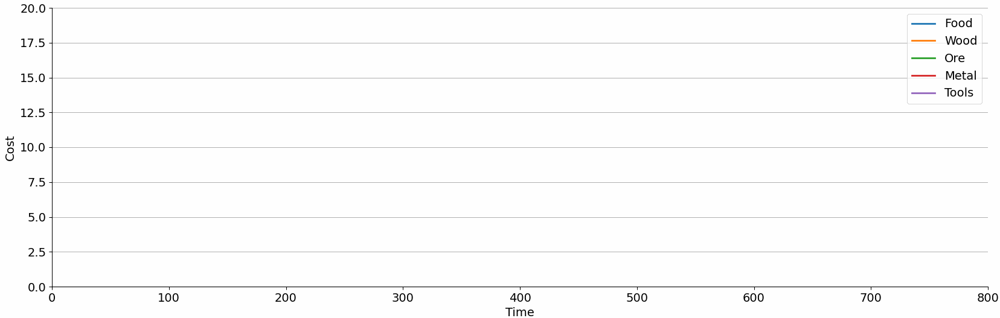

Project 008 - Free Markets
Published on Wednesday, 07, October, 2020Where we realise that things only have value if we all believe they do.

Several years ago, I came across this excellent article written by Jonathon Doran and Ian Parberry detailing how one could build realistic market economies in fantasy games.
The basic idea is pretty simple:
The world is populated with different kinds of Agents. These agents consume some types of Goods, and produce other kinds of goods. For example, a farmer agent Bob might consume a quantity of wood (by building fences) to produce a quantity of food. A different agent such as Alice the woodcutter might alternatively consume food to produce wood.
Over time, this would naturally lead to each agent having a surplus of some kinds of goods and a deficits in other kinds of goods. To enable trade, we therefore bring all our agents together once per turn and allow them to make requests to buy and sell to each other. Agents with excess goods will sell them to other agents with deficits in those kinds of goods. In our example above, farmers would sell food to woodcutters, and woodcutters would sell wood to farmers.
All pretty normal so far. The key new idea is that there is no inherit value in any of the goods. The agents don't buy or sell based on some globally fixed price. Each agent maintains a certain price belief about the value of each good, independent of every other agent. For example, Bob our farmer might believe food is worth somewhere between 3 and 5 gold and will not sell food below that price belief, whereas Alice our woodcutter may believe food is worth between 4 and 8 gold and will not buy above it.
To perform a trade, whether buying or selling, each agent picks a random number between their respective price belief limits, and picks a quantity of goods to sell/buy. In the market itself, these buy/sell requests alongside the price of each good and quantity of each good are added to two big books that hold every buy / sell request made that round. Those selling at the lowest prices are matched up with those buying at the highest price (to reflect the popularity of those selling at low prices and those buying at high prices). In our example, our farmer Bob might want to buy some wood. Alice, Steve, and Greg (all woodcutters) are selling for 3, 5, and 6 gold respectively. Bob the farmer will favour Alice, as she is offering the lowest price.
The true price of the good is calculated as the mean of the buyer's and seller's asking price and the goods are sold for that amount. Money is handed over, goods are handed over, and both agents walk away more certain in their price beliefs because they successfully bought/sold at a value they expected. Specifically, they'll shift their mean price towards the price they actually traded at, and decrease the range of their price beliefs. If Alice successfully sold at 4 gold, she may shift her price beliefs from 4 - 8 gold to 3 - 5 gold. But what happens to Steve and Greg, who failed to sell? They also update their price beliefs, because they failed to sell. They'll also shift their price beliefs towards the typical selling price for that type of good, but they'll also increase their uncertainty to reflect their lack of knowledge about the price.
Repeat this a few hundred times with a few hundred agents, and you get this:

In this Gif I simulate a fake wood shortage between rounds 200 and 300. You can see this has an immediate effect on tool production, but a delayed effect on food, ore and metal production as this shortage takes time to propagate its way through the system.
But we're not done yet...
I'm not going to elaborate too much further because there's a lot more I want to do with this project. I suspect i'll end up revisiting it over the next few months. For now though, I'm shelving it. This thing is really difficult to debug and I'm not in the right frame of mind to do so.
If you are interested in the code, you can find the git link here: https://github.com/JoshGreenslade/20_09_EconSim.
It's in a slightly rough state mind!
Like it?
Hate it?
Let me know!